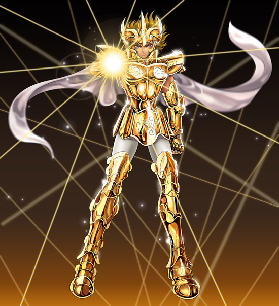
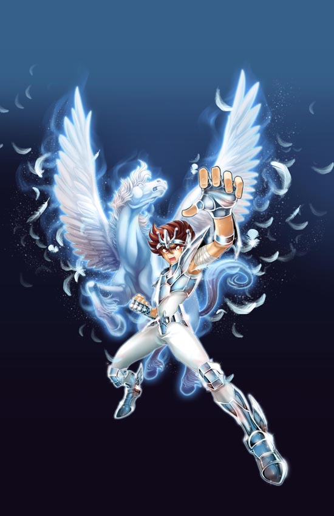

新服活动开启啦！然而最后的圣斗士在哪里？
2017-08-15 【字号：大中小】
为了女神，我们勇敢前进！“圣斗士们”，今天我们为了大地的爱与和平一起冲锋。
然而岁月前行，再强的圣斗士也会老去，就像黄金十二宫的主人，换了一批有一批，直至今日。
那么我们不禁发问，世界和平了，最后的圣斗士在哪里？

在原著漫画的《大决战，哈迪斯神殿》中，为救雅典娜，星矢挡住了冥王的剑，所以就没了。最后我们再也没有星矢的消息。而在天界篇中，星矢没有死，只不过是失去了知觉。
而小编认为，除了星矢和其他的圣斗士之外，许多年后没有了战争，谁还会去当圣斗士呢？
有当然有，不知道大家还记不记得贵鬼。

贵鬼，白羊座黄金圣斗士，自称司掌“新生与技巧”是前任白羊座黄金圣斗士穆的徒弟和助手。天生具有念动力、空间传送、瞬间移动等超能力。眼睛上方的豆点形状的眉毛是嘉米尔一族（姆大陆后裔）的象征。可以看到这是一个集成了穆老师意志的钢铁战士，而他几乎承包了后期的战斗，与紫龙一统面对黑暗。
在小编看来，除去主角的光环，贵鬼称得上是最后的圣斗士，不管是年龄还是战斗力，他应该是雅典娜应允的白羊座黄金圣斗士。
你们觉得呢？
《圣斗士星矢Online》端游是由SEGA正版授权、车田正美全程监修、完美世界自主研发的一款大型MMORPG网络游戏，于2013年5月16日在中国大陆正式运营。游戏讲述了在久远的神话时代，天空的宙斯和海中的波塞冬，以及冥界的哈迪斯无一不在觊觎人类赖以生存的大地为背景。为了保护人们，爱好和平的女神雅典娜站出来，与邪恶的神展开抗争。燃烧吧，小宇宙!为保护大地的爱与和平，前进!